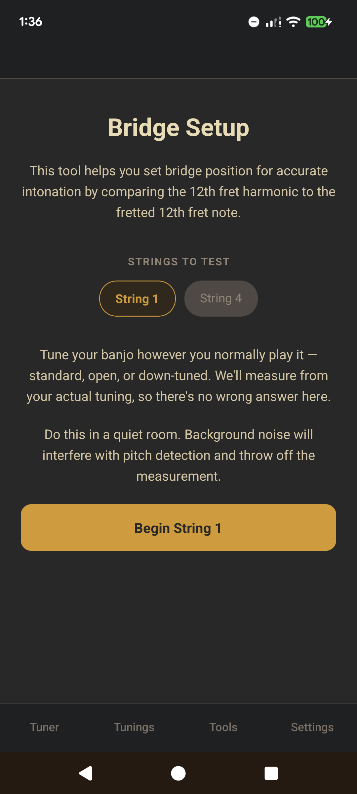
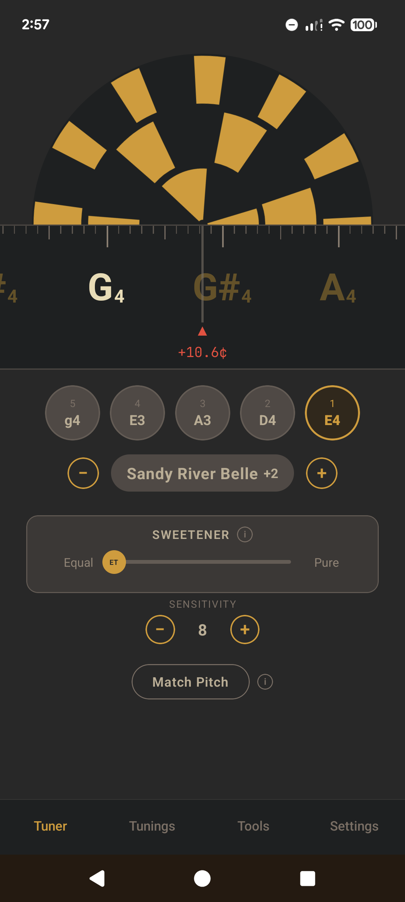
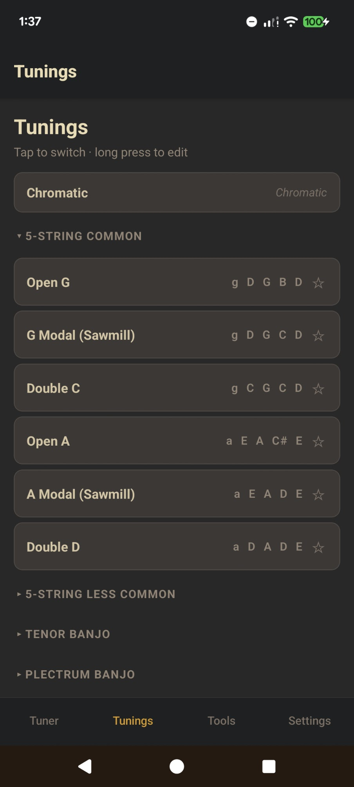
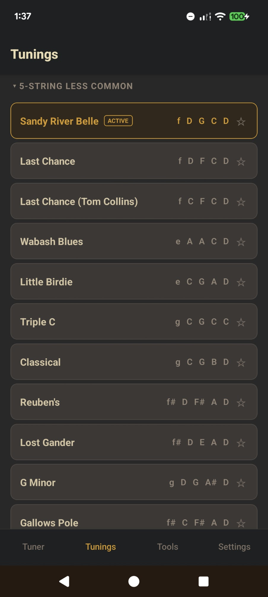
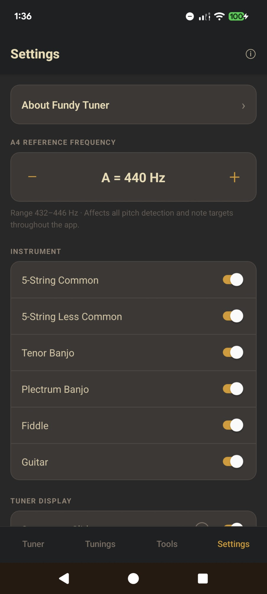
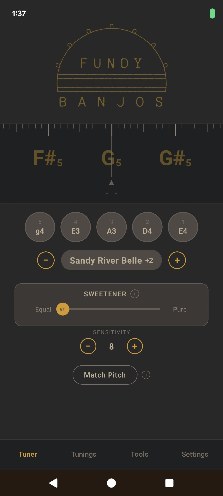
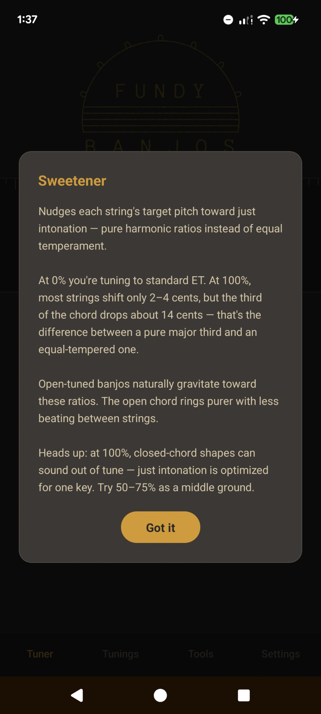

A banjo tuner built for clawhammer and old-time players.
Most tuners just show you a needle and a note name. Fundy Tuner goes further with tools designed around the way banjo players actually tune, set up, and play their instruments.
It's currently in beta and free to download on both Android and iPhone.

Your banjo can be perfectly in tune on the open strings, but if the bridge is even slightly off, it will sound out of tune as you play up the neck. Getting the bridge in the right spot can be tricky.
Fundy Tuner includes a step-by-step bridge placement tool that walks you through the process. It listens to your 12th fret harmonic, then listens to the fretted note at the same fret, and tells you exactly which direction to move the bridge and how far. No math, no guesswork. Just follow the prompts and your intonation will be dialled in.
As far as I know, this is the first tuner app to include a tool like this.

Tap the Fundy Banjos logo at the top of the screen to switch to strobe view. The spinning disc gives you a level of accuracy that goes well beyond what a standard needle or tape display can show. It slows down and stops as you approach the target pitch, making it easy to see even tiny deviations. If you want your tuning as tight as possible, this is how you get there.
It also supports multi-harmonic ring modes, which respond to the harmonic content of your string rather than just the fundamental. Useful for getting that last bit of sweetness out of an open chord.



Banjo players don't just use one tuning. Old-time music calls for dozens of them. Fundy Tuner comes loaded with tunings like Double C, Sawmill, Sandy River Belle, Open D, and many more. It also includes tunings for guitar, fiddle, and tenor banjo, all with auto string detection and transposition. Switching is as simple as tapping the one you want.
You can also star your favourites so they always appear at the top of the list, or create your own custom tunings.

When you pluck a string, the tuner automatically figures out which string you're tuning. Most of the time this works seamlessly. You just play and tune.
Occasionally, especially with open-back banjos, harmonics or nearby strings can cause the detected note to jump around. If that happens, just tap the string button to lock the tuner onto that string. It will filter out everything else and focus only on the note you're after. Tap again to unlock when you're done.
If you're using a capo or tuning your banjo down a step or two, you don't need to do any mental math. Set your capo position or transposition with the buttons on screen, and all your tuning targets shift to match. This works with every tuning in the app, even the unusual ones.

Ever notice how a banjo can be perfectly in tune according to a tuner but still doesn't quite ring the way you want? That's because most tuners use equal temperament, a compromise that spreads tuning equally across all keys but doesn't let any single chord ring as purely as it could.
The sweetness slider lets you nudge your tuning toward pure intervals. The kind your ear naturally wants to hear when you're playing open chords and droning strings. Slide it up and your open tuning will ring and shimmer more. It's experimental, and how far you take it is up to your ear and the music you're playing.
Playing in a noisy room, or finding the tuner picks up too much background sound? You can adjust the microphone sensitivity in the settings. Turn it down to filter out more noise, or turn it up if the tuner isn't picking up your instrument well enough. It's a simple slider that helps the tuner work better wherever you are.
Playing along with someone whose instrument isn't at concert pitch? Or trying to learn a tune from an old recording that's sharp or flat? Tap Match Pitch, play any note on the other instrument, and the app shifts all your string targets to match it. Works with pianos, fiddles, recordings, anything with a pitch to lock onto.
Download the APK directly and install it on your phone. It's free.
Download for AndroidThe app is about 87 MB. That's normal and doesn't affect how it runs. Tested on Android 10 and above.
The iPhone version is available as a beta through Apple's TestFlight app.
Get on TestFlightTestFlight is Apple's official way to try apps before they're released on the App Store. It's free and safe to use.
Fundy Tuner has no internet access, makes no network requests, and collects no data. The only permission it needs is your microphone, to hear your instrument. Nothing leaves your device.
Found a bug or have a suggestion? Email us at fundybanjos@gmail.com. All feedback is read and shapes what gets built next.